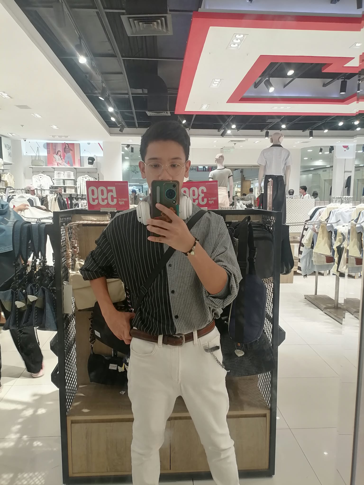

2023 — Present
Bachelor of Science in Information Technolgy
Davao Del Norte State College · 4th Year
Information Technology Student
Hello, I’m RJ — an aspiring web developer who loves making digital experiences feel a little more human.

PROFILE / 0101 / A little introduction
I’m an IT student with a growing interest in front-end development and user-centered design.
I enjoy learning how the web works, then using that knowledge to make things that are clear, useful, and welcoming. I’m currently strengthening my foundations in HTML, CSS, JavaScript, and collaborative development.
↳Career objective To grow into a thoughtful web professional, contribute to real-world projects, and build accessible experiences that make everyday tasks easier.
02 / The learning path
Davao Del Norte State College · 4th Year
La Filipina National High School
03 / Tools & approach
Skills grow with practice. Here’s what I’m learning and bringing to each project.
Always open to learning something new.
04 / Selected work
Replace these starter concepts with your own academic and personal projects.
05 / Experience & recognition
Use this space to describe a school project, your contribution, the tools you used, and what you learned.
Add certificates, workshops, competitions, seminars, organization involvement, or academic awards.
Highlight a student organization, volunteer role, team activity, or other meaningful participation.
06 / Find me around the web
Have a project, opportunity, or kind recommendation? I’d love to hear from you.
pinoyrj458@gmail.com